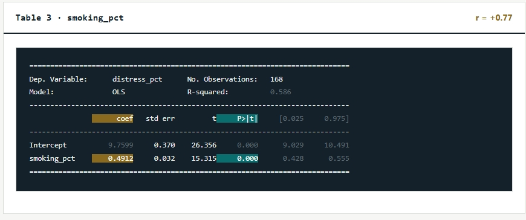

The numbers at a glance
The regression results show a positive association between smoking rates and mental distress across the ZIP codes included in the analysis.
Regression output
The original regression table used for this analysis is shown below.

What the results mean
The data show a positive correlation between smoking and mental distress, with an r value of +0.77. This indicates that ZIP codes with higher smoking rates also tend to have higher reported levels of mental distress.
The regression slope of 0.49 means that a one-percentage-point increase in the smoking rate is associated with an estimated 0.49-percentage-point increase in the mental distress rate.
The reported p-value of 0.000 indicates that the relationship is statistically significant; because p-values are not literally zero, this is more accurately presented as p < 0.001.
Important distinction: These findings describe an association across ZIP codes. They do not establish that smoking causes mental distress or that the same relationship necessarily holds for each individual.
Higher smoking rates are associated with higher mental distress.
Across the NYC ZIP codes studied, the analysis suggests a statistically significant positive relationship between the two measures. Additional research would be needed to investigate possible causes.